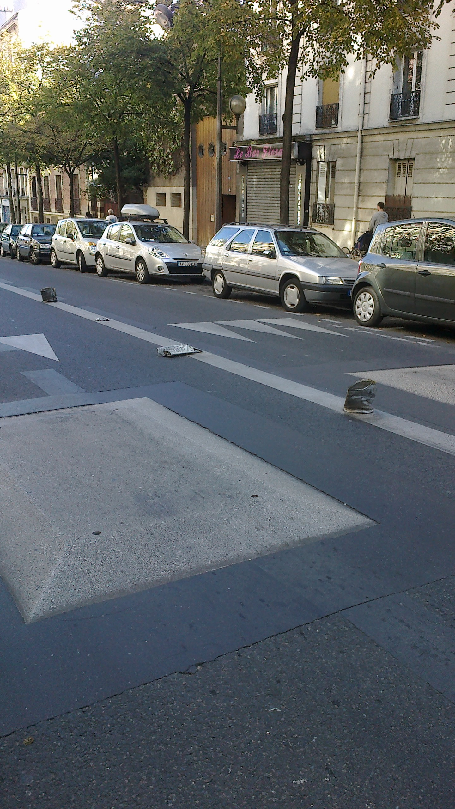
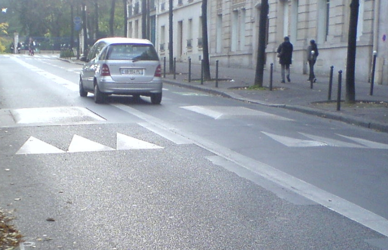

Speed bumps are quite effective in slowing down traffic, provided they are clearly visible and wear their heart on their sleeve. France uses at least two types of speed bumps (they were cozily called “sleeping policemen”, “gendarmes couchés”): prism-like center bumps, and hilly, rounded bumps that go from sidewalk to sidewalk. On top of that, there are other methods that basically shrink the lane so that only one car at a time can drive in either direction.
 Paris, Avenue Reille. Affordances rule the world. Image credit: RC. Paris, Avenue Reille. Users only understand affordances. Image credit: RC.
A few years back, prism-like bumps were placed on each lane in Avenue Reille. They do not go from sidewalk to sidewalk, but only occupy the center of each lane (presumably to give motorbikes and bicycle a chance to slip through – understandably so, as bikers are more heavily affected by bumps than car drivers.) But the open space between bumps is enough for a car to pass. Thus cars simply avoid the bump and behave in an almost-illegal way, as you are not supposed to drive on the dividing line.
Immediately after the bumps got installed, someone noticed the problem, and had plastic poles erected on the middle line. They were history in about one week, as drivers ignored them and run over them. User experience rules the world.